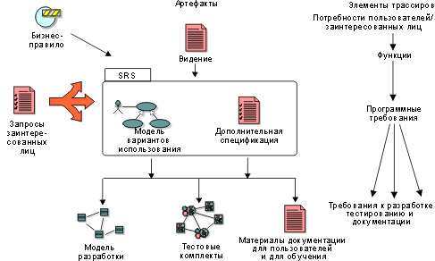

| Концепция: Типы требований |
 |
|
| Связанные элементы |
|---|
|
Традиционно требования рассматриваются как формулировки, относящиеся к одной из категорий, упомянутых в документе Концепция: требования. Требование определяется как "условие или возможность, которым должна соответствовать система". Мы уже знаем, что для эффективного управления требованиями само понятие требования необходимо отнести не только к спецификации требований к программному обеспечению. Для того чтобы выделить различные уровни и цели требований, вводится понятие типов требований. 
Возможно, будет целесообразно выделить неоднозначные "пожелания" наряду с формальными запросами заинтересованных лиц, чтобы иметь возможность их выполнить. В
документе Видение описано, как можно учитывать ключевые "потребности
пользователей" и "функции" системы. Модель
вариантов использования эффективна для формализации функциональных "требования к программному обеспечению", поэтому
может потребоваться указать варианты
использования как требования, равно как и отдельные особенности свойств вариантов использования, обеспечивающие
"условия или возможности, которым должна соответствовать система". Вспомогательные спецификации могут включать прочие "требования к
программному обеспечению", такие как проектные ограничения или законодательные требования к системе. Вместе варианты использования и вспомогательные спецификации могут составлять Спецификацию требований к программному обеспечению (SRS) для
какой-либо функции или подсистемы. Дополнительная информацияДополнительная информация по этому вопросу содержится в перечисленных далее документах:
Концепция: требования |
© Copyright IBM Corp. 1987, 2006. Все права защищены.. |